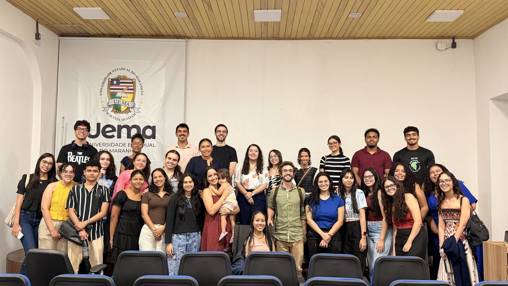
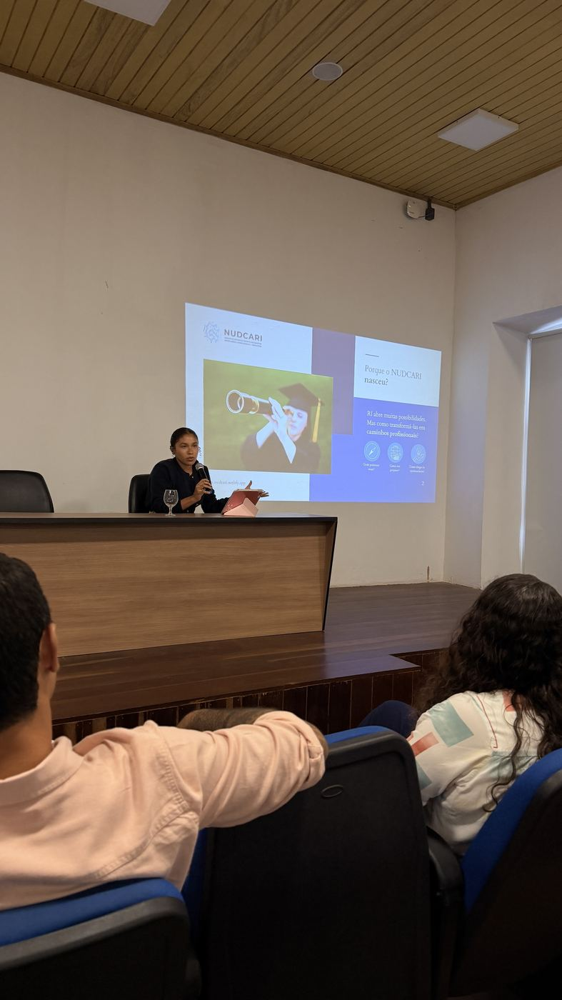
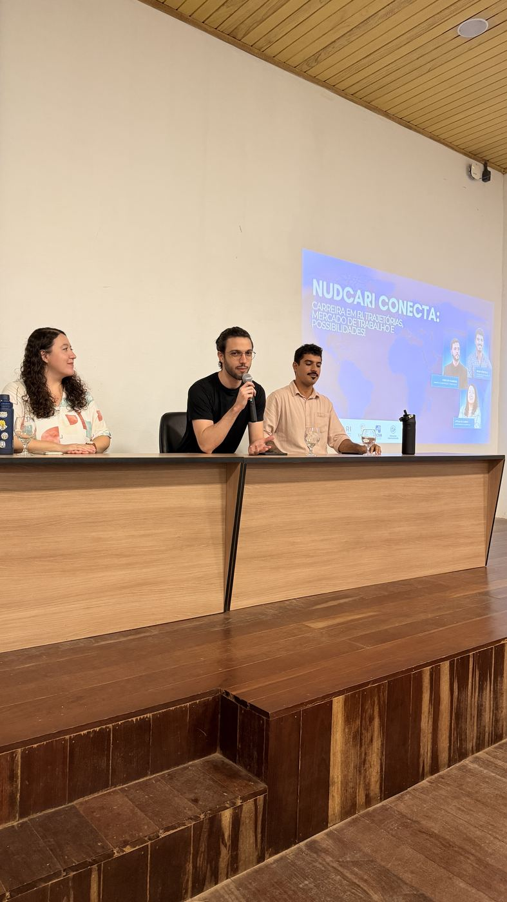
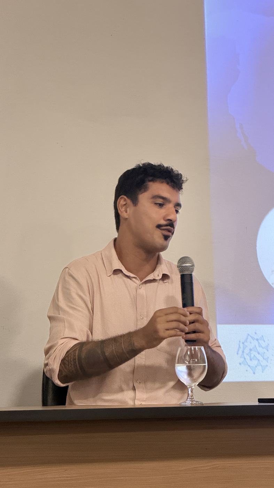
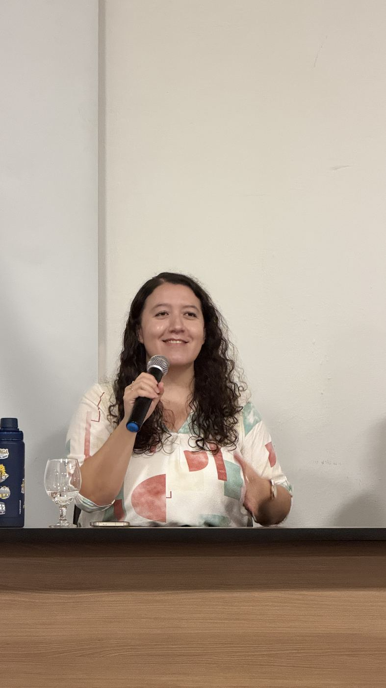
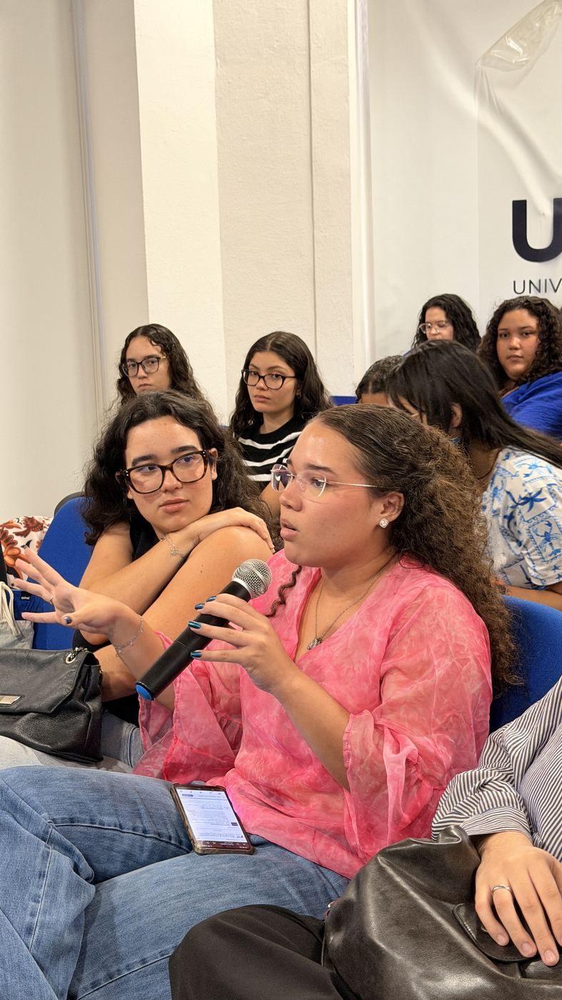
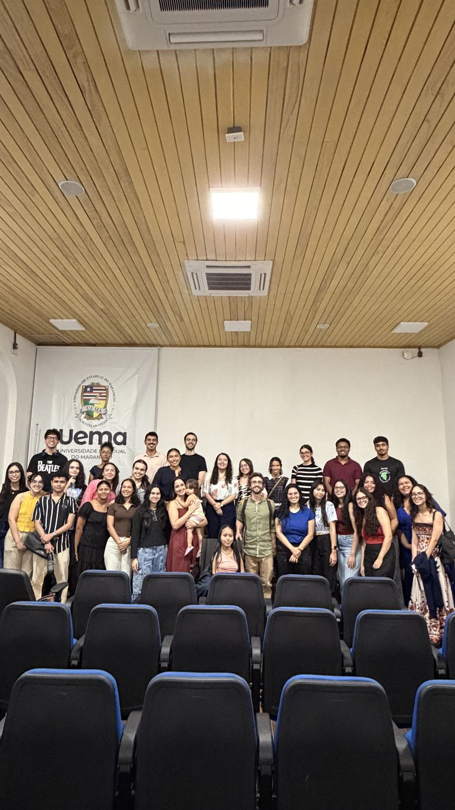
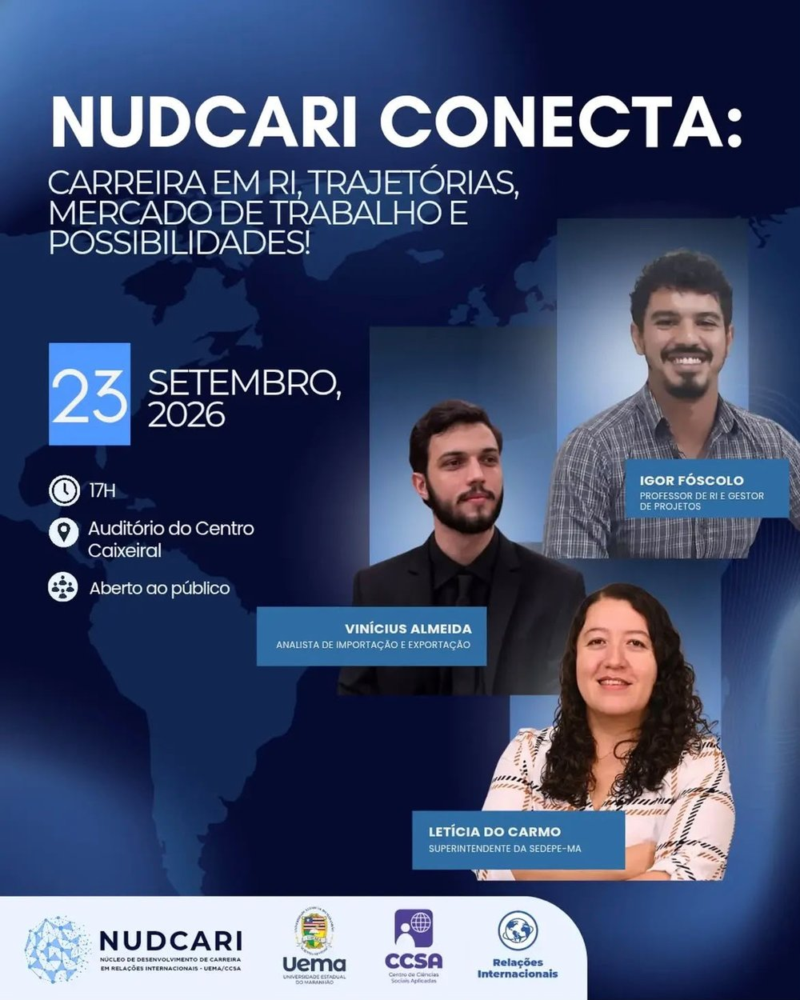
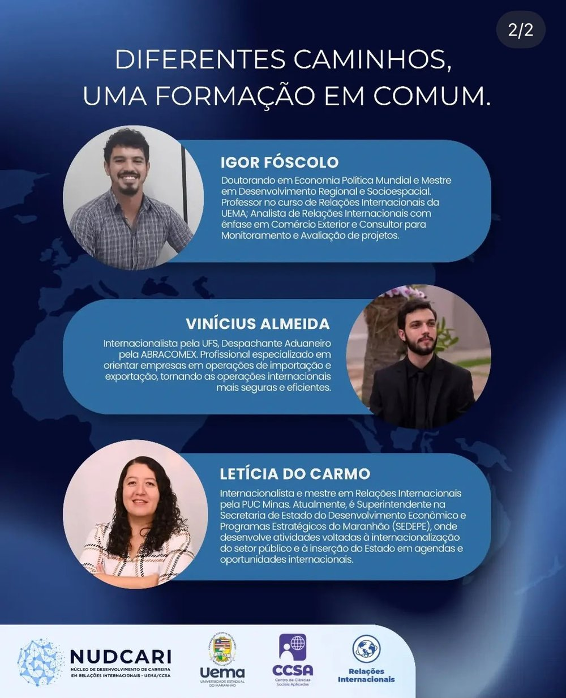

NUDCARI Conecta
Carreira em RI, trajetórias, mercado de trabalho e possibilidades
No dia 23 de setembro, o NUDCARI realizou seu primeiro evento: uma roda de conversa com três convidados — Letícia do Carmo, Igor Fóscolo e Vinícius Almeida — sobre trajetórias profissionais no universo das Relações Internacionais.
Cada um compartilhou como construiu sua carreira e encontrou seu espaço no mercado de trabalho, trazendo relatos que aproximaram os estudantes de experiências reais da profissão. Mais do que uma palestra, foi uma oportunidade de tirar dúvidas diretamente com internacionalistas formados que hoje atuam em suas áreas de formação — e de enxergar, na prática, os diferentes caminhos que a graduação em RI pode abrir.
Foi um encontro simples, mas marcante: o primeiro de muitos passos do NUDCARI para aproximar a academia do mercado de trabalho.
- Data 23 de setembro de 2026
- Horário 17h
- Local Auditório do Centro Caixeiral
- Entrada Gratuita, aberta ao público
Convidados
Igor Fóscolo
Professor de RI e gestor de projetosDoutorando em Economia Política Mundial e mestre em Desenvolvimento Regional e Socioespacial. Professor no curso de Relações Internacionais da UEMA, analista de RI com ênfase em Comércio Exterior e consultor de monitoramento e avaliação de projetos.
Vinícius Almeida
Analista de importação e exportaçãoInternacionalista pela UFS e despachante aduaneiro pela ABRACOMEX. Especializado em orientar empresas em operações de importação e exportação, tornando as operações internacionais mais seguras e eficientes.
Letícia do Carmo
Superintendente da SEDEPE-MAInternacionalista e mestre em Relações Internacionais pela PUC Minas. Atua na Secretaria de Estado do Desenvolvimento Econômico e Programas Estratégicos do Maranhão, com foco na internacionalização do setor público e na inserção do Estado em agendas internacionais.
Acervo de fotos







Divulgação

